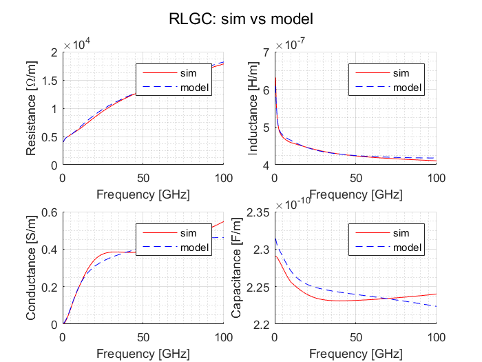
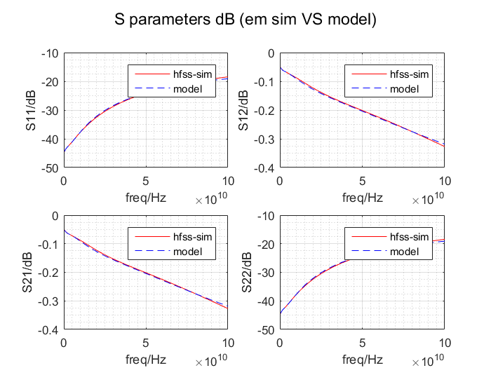
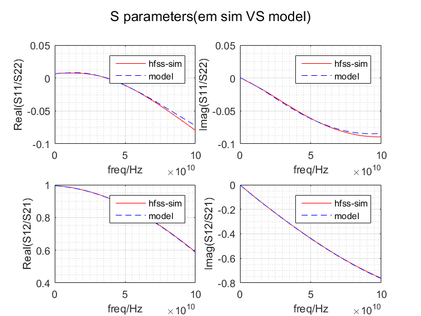
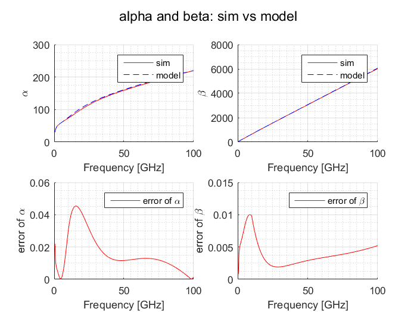

Contents
clc;clear;close all
addpath('./function')
dbstop if error;
l2w4s4_file = './S_parameters_sim/L2W4S4_150G.csv';
freq_unit = 'GHz';
zero_freq = 0;
freq_max = 100e9;
freq_min = 0.5e9;
len =str2double(cell2mat(regexp(l2w4s4_file,'\d{2,3}', 'match')));
num_pi = ceil(len/50);
len = len *1e-6;
[ s_params,freq] = hfss_csv_2_sparams(l2w4s4_file,zero_freq,freq_unit);
if max(freq)< freq_max || min(freq)>freq_min
error('max(freq)< freq_max || min(freq)>freq_min');
end
s_params = s_params(:,:,freq<=freq_max & freq>=freq_min );
freq = freq(freq<=freq_max & freq>=freq_min );
extract the RLGC
[R,L,G,C,gamma,Z0] = S_2_RLGC(s_params,freq,len);
f_2_zone = (4:0.5:25)*1e9;
f_1 = 1e9*ones(1,length(f_2_zone));
f_3 = freq_max*ones(1,length(f_2_zone));
f_123_mat = [f_1;f_2_zone;f_3];
model RL
lambda_RL = [0.5;0.5];
weight_RL = ones(length(freq),2);
weight_RL(100:200,:) = weight_RL(100:200,:)*1;
fun = @(A,B) A./B;
weight_RL = bsxfun(fun,weight_RL,sum(weight_RL,1));
[R_fit,L_fit,R_0123_fit,L_0123_fit,f_fit_RL,Err_RL,Err_min_RL] =...
fit_RLGC(f_123_mat,freq,R,L,G,C,lambda_RL,weight_RL,'RL',3);
model GC
lambda_GC = [0.5;0.5];
weight_GC = ones(length(freq),2);
weight_GC(100:200,:) = weight_GC(100:200,:)*1;
weight_GC = bsxfun(fun,weight_GC,sum(weight_GC,1));
[G_fit,C_fit,G_0123_fit,C_0123_fit,f_fit_GC,Err_GC,Err_min_GC] = ...
fit_RLGC(f_123_mat,freq,R,L,G,C,lambda_GC,weight_GC,'GC',3);
RLGC display
RLGC = [R,L,G,C];
RLGC_fit = [R_fit,L_fit,G_fit,C_fit];
use equations to calculate the s parameters of the equivalent model
[ S_model_cal] = cpw_model_pi_net(freq,R_0123_fit,L_0123_fit,G_0123_fit,C_0123_fit,f_fit_RL,f_fit_GC,len,num_pi);
[R_model,L_model,G_model,C_model,gamma_model] = S_2_RLGC(S_model_cal,freq,len);
RLGC_model = [R_model,L_model,G_model,C_model];
plot_RLGC_double(freq,RLGC,RLGC_model,{'sim','model'},'RLGC: sim vs model',{'-r','--b'});
disp_RLGC_err( RLGC,RLGC_model,f_fit_RL,f_fit_GC,'Summary of RLGC model');
plot_Sparam_double(freq,s_params,S_model_cal,{'hfss-sim','model'},'S parameters dB (em sim VS model)');
plot_Sparam_double_Real_Imag(freq,s_params,S_model_cal,{'hfss-sim','model'},'S parameters(em sim VS model)','off' );
disp_Sparam_error( s_params,S_model_cal,'Error of S parameters');
[Err_alpha,Err_beta ]=plot_gamma_double(freq,gamma,gamma_model,{'sim','model'},'alpha and beta: sim vs model',{'-r','--b'} );
disp_alpha_beta_err( Err_alpha,Err_beta,'Error of alpha & beta' );
=================================================================================
Summary of RLGC model
=================================================================================
The corner frequencies of the RL network:f1=1.00 GHz f2=18.50 GHz f3=100.00 GHz
The corner frequencies of the RL network:f1=1.00 GHz f2=9.50 GHz f3=100.00 GHz
Maxium error ratio of R :5.58%
Average error ratio of R:2.07%
Maxium error ratio of L :3.55%
Average error ratio of L:0.68%
Maxium error ratio of G :227.29%
Average error ratio of G:7.51%
Maxium error ratio of C :1.04%
Average error ratio of C:0.44%
=================================================================================
=================================================================================
Error of S parameters
=================================================================================
Maxium error ratio of Real(S11) :742.23%
Average error ratio of Real(S11):9.56%
Maxium error ratio of Imag(S11) :54.86%
Average error ratio of Imag(S11):2.90%
Maxium error ratio of Real(S12) :0.38%
Average error ratio of Real(S12):0.13%
Maxium error ratio of Imag(S12) :1.36%
Average error ratio of Imag(S12):0.34%
=================================================================================
=================================================================================
Error of alpha & beta
=================================================================================
Maxium error ratio of alpha :4.54%
Average error ratio of alpha:1.59%
Maxium error ratio of beta :1.00%
Average error ratio of beta:0.40%
=================================================================================
   